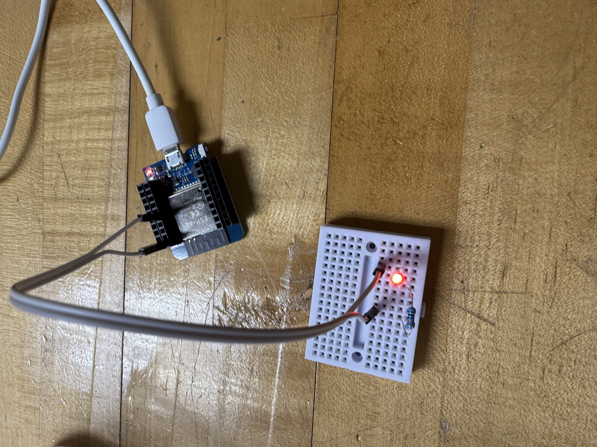

IoT Plant Watering System
A flower-shaped IoT plant monitoring and watering device. Instead of building a box, we designed the enclosure to look like what it's sitting next to: a potted flower that disguises its electronics inside a 3D-printed pot and stem. Sensors are hidden in the petals. An ESP32 reads temperature, humidity, soil moisture, and lux every sampling interval and publishes to Stevens' MQTT server. Deployed for 10 days in the Integration Lab.

Problem Statement
Design and build a standalone IoT plant monitoring and watering system within a 5″ × 5″ × 10″ envelope. The system must measure atmospheric temperature, humidity, soil moisture, and illumination level, and autonomously deliver 20 mL of water per day. All sensor data must be published to Stevens' MQTT server at a defined sampling interval. The device must be deployed in the Integration Lab (EAS 201) for at least 3 consecutive days. All components must be mechanically fastened; no loose parts if you pick it up.
The brief also explicitly called out that a plain rectangular box "often misses usability, aesthetics, and functionality." That note drove the entire design direction.
Concept Development
The first instinct was a clip-on design that mounts directly to the plant pot. The constraint that the device had to be standalone ruled that out. From there we asked what a standalone device next to a plant could look like that wouldn't be out of place — and the answer was another plant. A 3D-printed flower pot with a flower on top: the pot houses all the electronics, the stem routes wires to the top, and the petals hold the sensors. Nothing flashy, nothing that looks out of place in a lab with real plants.


Mechanical Design
The enclosure is 12 unique parts (14 total), all 3D-printed. Total print time on the Adventurer 3 Series: 15 hours and 48 minutes. The design was also validated against the 5M Pro printer to meet the size constraint.
| Part | Function | Fastening method |
|---|---|---|
| Pot | Main enclosure. Houses the electronics sled and water bottle. Holes on the upper side route the soil sensor cable and water tube; lower hole routes USB power to the ESP32. | Three heat-set inserts for lid attachment. Preserves threads across repeated removal, unlike 3D-printed holes. |
| Electronics sled | Holds ESP32, breadboard, motor driver, and pump as a removable unit. Slides in and out for service without disassembling the pot. | ESP32: slot + retention clip. Breadboard: press fit + adhesive. Motor driver: standoffs and screws. Pump: press fit on motor body. |
| Water level sensor (2 parts) | Slides into the water bottle. Holds three wires at two detection heights and the water tube at the bottle bottom. | Press fit into the bottle neck. |
| Lid | Caps the pot and holds the stem. Slanted at 10° so water poured in runs to the center; three channels direct flow to the bottle opening while keeping stem wires dry. Three wire channels route stem wires to the sled. | Three countersunk screws into the pot's heat-set inserts for a flush finish. |
| Stem + stem top | Stem routes all nine wires between the pot and the flower top (5.4 mm minor diameter). Stem top splits the nine wires to their respective petals via dovetail-jointed slots. | Press fit between stem and pot lid; dovetail joints for petals. |
| Petals (multiple) | Each petal holds a specific sensor or LED. Unique geometry per function. | Dovetail press fit into stem top. |
| Flower center | Purely aesthetic; hides the dovetail joints. The only painted part of the design. | Press fit into stem top center hole. |

Electrical System
The full wiring harness is 18 wires. All of them terminate at the breadboard inside the pot, where solid-core jumper wires continue to the ESP32. This keeps the flexible leads organized and makes troubleshooting straightforward: every connection has one identifiable point. The ESP32 sits in a retention clip at the center of the electronics sled with the breadboard press-fit to the left, and the color-coded wiring harness for the flower top exits from the right side.
Sensors
Stem Wiring Challenge
The stem's 5.4 mm minor diameter forced us to reduce the wire count routed to the flower top. The naive count for all LEDs, DHT-11, and photoresistor is 11 wires. We reduced it to 9 by sharing a common ground across all three LEDs, one ground instead of three. All nine wires were given unique colors so they could be traced from the soldered connections at the petal level back to the breadboard. The connectors were cut off to fit through the stem bore; wires were soldered directly to the components.
Water Level Indicator LEDs
Because the water bottle is inside the pot and completely invisible, the design needed a way to communicate fill level to the user. The custom sensor drives two LEDs visible in the flower:
| Blue LED | Red LED | Status |
|---|---|---|
| Off | Off | Water level too low: refill needed |
| On | Off | Normal: water level is good |
| On | On | Full: stop adding water |

Software
The firmware runs on the ESP32 (Arduino framework), approximately 250 lines. The main sections are global variable setup, sensor reading and publishing, and supplementary utility functions.
| Microcontroller | ESP32 (Arduino framework). Wi-Fi used for MQTT connection. |
| MQTT server | Stevens' MQTT broker. All four sensor values published at each sampling interval in real time. |
| Sensor reads | dht.readTemperature() / dht.readHumidity() for DHT-11; analogRead() for photoresistor and soil sensor. Lux and °F values computed before publish; humidity and raw soil value published directly. |
| Watering logic | Pump runs once per day to deliver 20 mL regardless of soil readings. A timed pulse drives the mini pump via the motor driver. A manual reset command and a drain-all command were added as debug utilities. |
| Water level | Two analog reads on the voltage divider wires. Thresholds drive the blue and red LED states in real time; a warning is also printed to the serial monitor. |
| Data smoothing | Lux and soil humidity averaged over recent readings to reduce sensor noise. Applied after early deployment revealed spikes in the first two days of data. |
Early Prototyping
Before committing to the flower enclosure, the basic sensing and MQTT pipeline was validated on a bare breadboard with the ESP32, a test LED, and a soil sensor. Confirming the firmware worked before starting the mechanical design prevented debugging two unknowns at once.

Deployment & Results
The system was deployed in the Integration Lab (EAS 201) from December 1st through December 10th, ten consecutive days exceeding the minimum three-day requirement. It ran next to the snake plant it was monitoring, with the sled bay left accessible for inspection throughout the deployment period.
The first two days showed noisy lux and soil humidity readings with occasional spikes. Switching to a rolling average over recent samples cleaned up the data significantly. The daily watering ran reliably when the bottle was kept filled. The LED water level indicator proved necessary: without a visible fill gauge, the user responsible for refilling wasn't always sure when to add water. The two-LED system resolved that clearly.


Lessons Learned
Prioritizing aesthetics over ease of manufacture meant the design took significantly more iteration than a box would have. A few improvements identified for a future revision: the outer pot walls could be redesigned for vase-mode printing, which would dramatically reduce print time. The stem top could use curved wire channels rather than straight ones, making assembly of the nine wires at the flower top easier to route without pinching.
The heat-set inserts on the lid were the right call: the threads held through many removal cycles during assembly and debugging without any degradation. The dovetail joints on the petal connections were reliable but required close dimensional tolerance from the printer; there was essentially no margin for over- or under-extrusion.